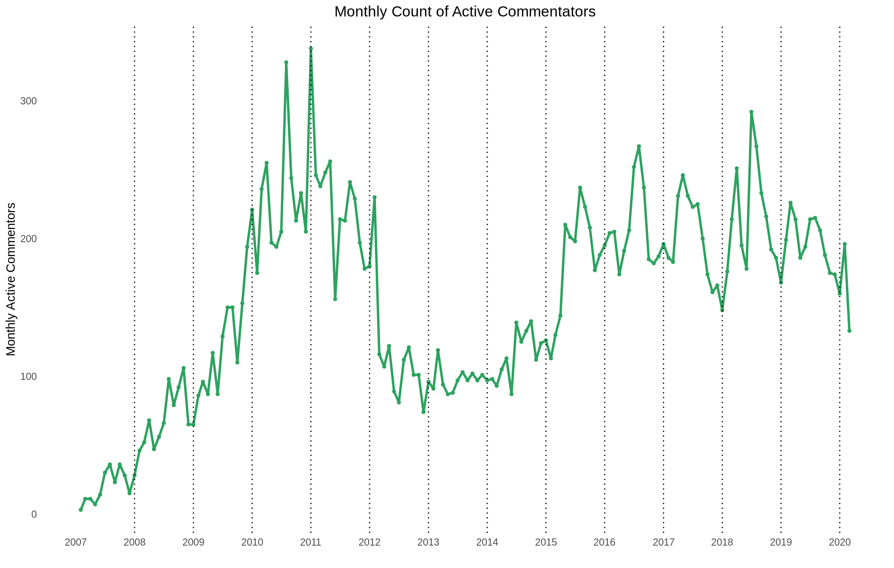
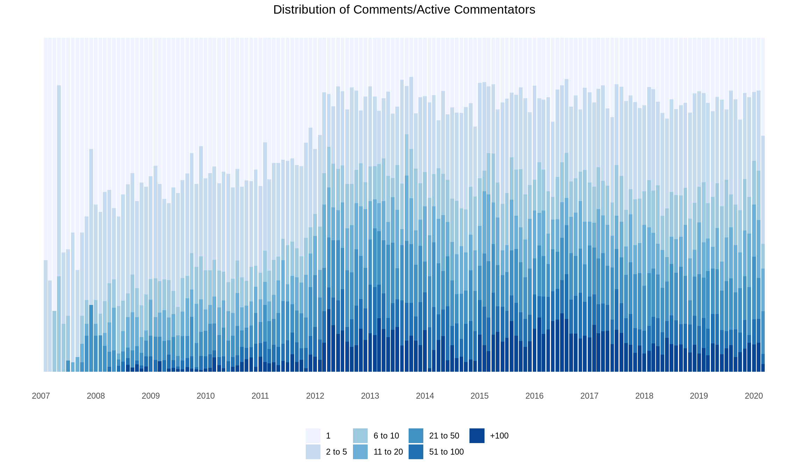

BWRAO Blog Growth
Ravi Solter, Alexander Traczyk
The Juventus fan site, Black White & Read All Over (BWRAO) is the largest English-language fan site on the internet and has shown notable growth since its creation in 2007.
Originally part of the ‘The Offside’ network of soccer blogs, BWRAO has steadily grown in the last 13 years, especially since joining the SB Nation network which is owned by Vox Media. The site has grown in nearly all product and engagement metrics, with monthly counts of articles, comments, active posters, and even authors all increasing.

Growing Number of Articles and Authors
The number of articles produced on a monthly basis has steadily grown since mid-2011. The monthly count of authors contributing to the site has also grown over the same period.
Note that up until that mid-point in 2011, the authors credit in each article read “The Offside Juventus”

Growing Engagement in Comment Section
Similarly, the number of comments had grown steadily since mid-2011. A few months stand out for generating the most commentary:
By far, the summer of 2016 was the busiest time on the blog, with June, July and August articles generating the most comment traffic. A few factors behind this surge were:
- Big transfers: Pogba going back to United, Higuain and Pjanic secured their move from Napoli and Roma to Juve. Dani Alves also arrived at Juve this summer, while Morata headed back to Madrid.
- Euro 2016 was ongoing, with Germany ousting Italy in the quarter finals on July 2nd.
- We signed Simone Zaza..
Unsurpisingly, the signing of Cristinao Ronaldo on July 10th, 2018 generated a huge amount of traffic to the site.
Finally, the month of May, 2015 generated a lot of traffic, with Juventus reaching the final of the champions league for the first time in 12 years.
{kind=link}

Monthly Active Users
The trend in monthly active users appears somewhat unintuitive. There appears to be a greater number of active users in the earlier years when the blog was producing fewer articles and fewer comments.
However, a closer look at the type of monthly active users broken out by the number of comments they make show a more consistent story. Following the switch from The Offside to SB Nation in March, 2013, the number of users posting only 1 comment per month dropped from roughly 30% to 15%. The swith to SB Nation also coincided with switching from the ‘disqus’ comment system to the one that is currently in use.

## $colour
## $title
## list()
## attr(,"class")
## [1] "waiver"
##
## $title.position
## NULL
##
## $title.theme
## NULL
##
## $title.hjust
## NULL
##
## $title.vjust
## NULL
##
## $label
## [1] TRUE
##
## $label.position
## NULL
##
## $label.theme
## NULL
##
## $label.hjust
## NULL
##
## $label.vjust
## NULL
##
## $keywidth
## NULL
##
## $keyheight
## NULL
##
## $direction
## NULL
##
## $override.aes
## named list()
##
## $nrow
## [1] 1
##
## $ncol
## NULL
##
## $byrow
## [1] FALSE
##
## $reverse
## [1] FALSE
##
## $order
## [1] 0
##
## $available_aes
## [1] "any"
##
## $name
## [1] "legend"
##
## attr(,"class")
## [1] "guide" "legend"
##
## attr(,"class")
## [1] "guides"